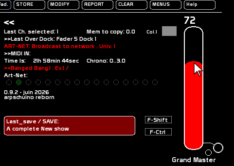
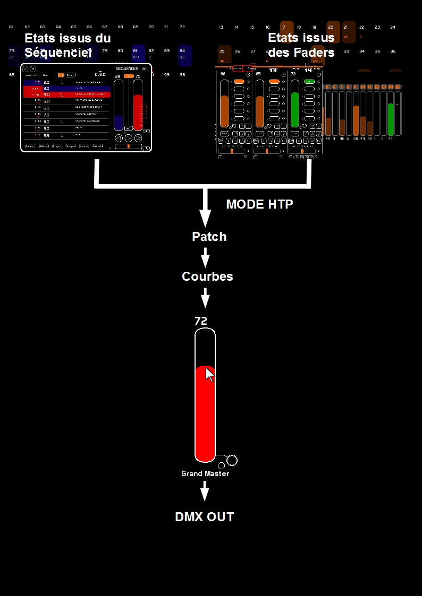

The Grand Master is a general master that affects the data sent to the DMX card and/or over the network via Art-Net.

The Grand Master can be controlled via midi:
For more about midi, see: Midi Configuration and Midi Assignments
By clicking the circle, you send to the midi out port the midi signal assigned to this Grand Master.
Moving the grand master up or down will not change the displayed levels, only the total DMX signal coming from the two DMX buffers:
A buffer is a memory that stores the states of the 512 channels.
These two buffers are merged in HTP (Highest Takes Precedence): the highest level is taken. Then the final result is subject to the action of the Grand Master.
